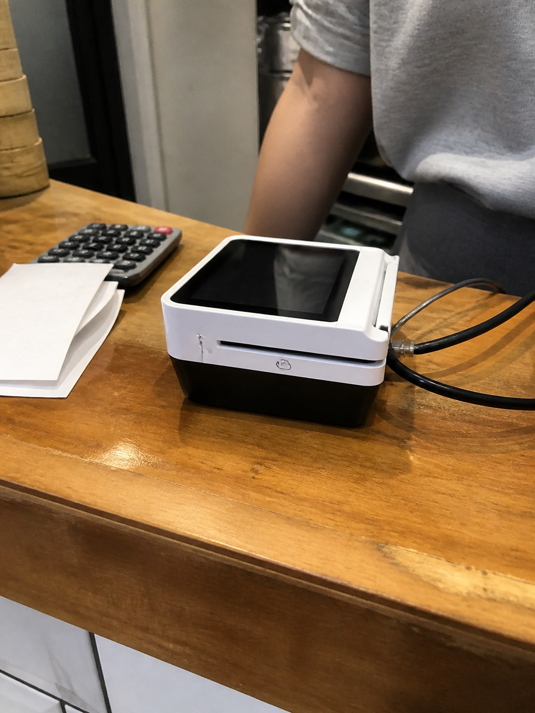
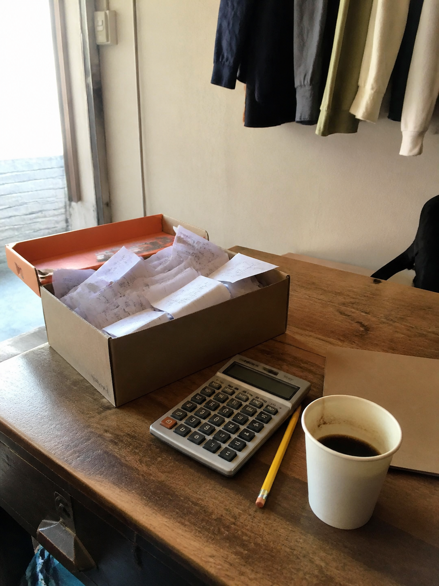

카드 매출 4억 1,667만 원, 이 선을 넘는 가게만 세금이 오릅니다
정부 세제개편안대로면 2027년부터 신용카드 매출 세액공제가 1.3%에서 1.2%로, 한도가 1,000만 원에서 500만 원으로 줄어듭니다. 카드 매출 4억 1,667만 원이 갈림길이고, 내년 1월 신고는 아직 옛 기준입니다. 우리 가게가 영향권인지 보는 계산을 정리했습니다.

카드 매출에 붙는 부가세 공제가 내년부터 줄어듭니다. 공제율은 1.3%에서 1.2%로, 연간 한도는 1,000만 원에서 500만 원으로 내려갑니다. 그런데 이 변화가 부딪히는 가게는 생각보다 좁습니다. 카드·현금영수증 발행액이 연 4억 1,667만 원을 넘는 곳입니다. 그 아래라면 공제율 0.1%포인트 차이만 남습니다.
숫자 두 개가 바뀝니다#
정부가 2026년 8월 3일 발표한 세제개편안에 담긴 내용입니다. 2027년 1월 1일 이후 재화나 용역을 공급하는 분부터 적용된다는 조건이 붙어 있습니다.
| 구분 | 지금(2026년까지) | 개편안(2027년부터) |
|---|---|---|
| 기본 공제율·한도 | 1% · 연 500만 원 | 같음 |
| 우대 공제율 | 1.3% | 1.2% |
| 우대 한도 | 연 1,000만 원 | 연 500만 원 |
| 우대 적용기한 | 2026년 12월 31일 | 2029년 12월 31일(3년 연장) |
표만 보면 "율이 조금 내려가고 기한이 늘었네" 싶습니다. 실제로는 반대에 가깝습니다. 공제율 0.1%포인트는 3억 원 매출에서 30만 원 차이입니다. 한도 500만 원은 8억 원 매출에서 500만 원 차이입니다. 큰 돈은 한도 쪽에서 나옵니다.
4억 1,667만 원은 계산으로 나온 선입니다#
한도가 500만 원이면, 공제율 1.2%로 그 한도에 닿는 발행액은 500만 ÷ 0.012입니다. 4억 1,666만 원쯤 됩니다. 반올림해서 4억 1,667만 원으로 부르는 숫자입니다. 이 선을 넘으면 매출이 늘어도 공제는 500만 원에서 멈춥니다.
서울경제가 8월 11일 보도한 추계를 보면, 한도가 절반이 되면 약 30만 명의 자영업자가 영향을 받고, 사라지는 혜택은 최대 7,500억 원, 1인당 평균 250만 원입니다. 새 공제율 기준으로 연 매출 4억 2,000만 원 이상에서 10억 원 이하 구간이 영향권이라는 설명입니다. 정부는 연 매출 4억 원 이하 영세 자영업자는 영향이 거의 없다고 밝혔습니다.
우리 가게 숫자로 옮겨 보겠습니다. 카드·현금영수증 발행액이 연 5억 원이면 지금은 650만 원을 공제받고, 개편 후에는 500만 원에서 멈춥니다. 차액 150만 원입니다. 7억 원이면 910만 원에서 500만 원, 차액 410만 원입니다. 8억 원 이상은 어느 쪽이든 한도에 걸리므로 정확히 500만 원이 줄어듭니다.

1월에 내는 신고는 아직 옛 기준입니다#
여기서 많이 헷갈립니다. 개편안이 국회를 통과해도 2027년 1월 25일 부가세 신고는 바뀌지 않습니다. 그 신고는 2026년 7월부터 12월까지, 즉 2026년 2기 실적을 다루기 때문입니다. 새 기준이 처음 들어가는 신고는 2027년 1기, 2027년 7월입니다.
그래서 순서가 이렇게 됩니다. 1월에는 지금 기준(1.3%, 1,000만 원 한도)으로 신고하고, 그다음 신고부터 줄어든 공제를 보게 됩니다. 12월에 매출이 몰리는 가게라면 2026년 2기 카드 매출이 커지니, 올해 공제는 오히려 한도까지 채울 수 있습니다. 이번 12월 매출이 내년 체감과 다른 이유입니다.
우리 가게가 영향권인지 보는 세 줄#
새 프로그램도, 새 촬영도 필요 없습니다. 이미 있는 정산 자료로 확인됩니다.
- 연간 카드·현금영수증 발행액을 뽑습니다. 카드사 정산 내역과 포스 기록에서 과세 매출만 더합니다. 면세 매출은 빠집니다. 4억 1,667만 원과 비교해 보세요.
- 납부세액이 공제액보다 큰지 봅니다. 이 공제는 낼 세금에서 빼는 방식이라, 공제액이 납부세액보다 커도 남는 돈을 돌려받지는 못합니다. 매입세액이 커서 원래 낼 세금이 적은 업종은 한도가 줄어도 체감이 작습니다.
- 공제 대상인지 확인합니다. 법인은 대상이 아닙니다. 개인사업자도 직전 연도 사업장별 공급가액이 10억 원을 넘으면 대상에서 빠집니다. 소매·음식점·숙박처럼 소비자 상대 업종이 중심입니다.
영향권에 들어간다면 12월에 할 일은 하나입니다. 내년 카드 매출 목표를 세울 때 세후 금액으로 다시 계산해 두는 것. 광고를 늘려 매출 1억 원을 더 만들면 부가세와 공제 축소가 같이 따라옵니다. 매출만 보고 광고비를 정하면 남는 돈이 어긋납니다. 이 구조는 장사는 더 잘되는데 통장은 그대로입니다에 더 자세히 적어 두었습니다.
이 계산이 안 맞는 경우#
세제개편안은 정부안입니다. 국회 심의를 거쳐야 확정되고, 9월 2일 보도에 따르면 조세소위 심사가 11월에 본격화될 예정이었습니다. 통과되지 않으면 우대공제는 2026년 말로 끝나고 기본값인 1%·500만 원으로 돌아갑니다. 어느 쪽이든 한도 500만 원은 같고, 공제율만 1%와 1.2%로 갈립니다.
업종별 차이도 큽니다. 이 공제는 발급금액에 비례하지만 실제로는 그 기간 납부세액 한도 안에서만 적용됩니다. 매입이 많은 업종과 적은 업종의 체감이 다르고, 간이과세자인지 일반과세자인지에 따라서도 달라집니다. 위 숫자는 공제액만 계산한 것이지, 실제 낼 세금을 계산한 것이 아닙니다. 신고 전에 세무사에게 우리 가게 자료로 확인하세요.
확인한 자료#
- 재정경제부, 2026년 세제개편안 발표(2026년 8월 3일) — https://english.moef.go.kr/sh/searchList.do?range=anywhere&searchTerm=taxation (새 탭에서 열림)
- 부가가치세법 제46조(신용카드 등의 사용에 따른 세액공제) 현행 조문 — 2026년 12월 31일까지 1.3%·연 1,000만 원
- 서울경제, 「[단독] 매출액 공제축소에…30만 자영업자 세부담 최대 7500억 증가」, 2026년 8월 11일 — https://www.sedaily.com/article/20078256 (새 탭에서 열림)
- 파이낸셜뉴스, 「자영업자 세 감면 축소, 국회서 뒤집히나…野, 손질 예고」, 2026년 9월 2일 — https://www.fnnews.com/news/202609021412045281 (새 탭에서 열림)
자주 묻는 질문#
내년 1월 부가세 신고 때 바로 줄어드나요?#
아닙니다. 2027년 1월 신고는 2026년 2기 실적이라 지금 기준인 1.3%·1,000만 원이 적용됩니다. 새 기준은 2027년 1월 1일 이후 공급분부터이므로, 2027년 1기 신고(2027년 7월)에서 처음 반영됩니다.
카드 매출이 4억 원이 안 되면 아무 영향이 없나요?#
한도 축소는 적용되지 않지만 공제율이 1.3%에서 1.2%로 내려가는 차이는 생깁니다. 3억 원이면 연 30만 원 정도입니다. 정부는 4억 원 이하 구간의 영향이 거의 없다고 설명했고, 실제 체감은 납부세액과 매입 구조에 따라 달라집니다.
매출을 나눠서 신고하면 공제를 더 받을 수 있나요?#
권하지 않습니다. 사업장별로 실제 공급가액과 신고가 달라지면 나중에 확인 대상이 됩니다. 이 공제는 증빙을 남기도록 만든 제도라, 기록을 나누는 쪽보다 기록을 정확히 남기는 쪽이 안전합니다.
우리 가게가 영향권인지 직접 계산하기 번거로우면 올해 카드·현금영수증 발행액과 업종만 카카오톡 채널 (새 탭에서 열림)로 보내 주세요. 공제 차액과 12월에 확인할 항목 세 가지를 무료로 계산해 드립니다.
KEEP READING
이어서 읽기
같은 흐름에서 이어지는 글입니다. 지금 매장에 해당하는 지점부터 읽으시면 됩니다.

매출이 들쭉날쭉한 가게는 은행에서 불리합니다 — 11월 26일, 신용평가의 계산이 바뀌었습니다
11월 26일 금융당국이 소상공인 대출 규제를 크게 풀었습니다. 다만 달라진 것은 금리가 아니라 은행이 보는 방식입니다. 매출액 대신 통장의 반복을 보는 대안신용평가(SCB)가 무엇을 보고, 가게가 이번 주에 정리할 수 있는 것이 무엇인지 쉬운 말로 풀었습니다.

장사는 더 잘되는데 통장은 그대로입니다 — 남는 돈이 줄어드는 세 가지 이유
올해 1~3분기 소상공인 사업장 평균 매출은 2.9% 늘고 이익은 5.2% 줄었습니다. 매출이 늘어도 남는 돈이 줄어드는 구조를 숫자로 풀고, 값을 올리지 않고 손님 1명이 쓰는 금액을 지키는 방법을 정리했습니다.